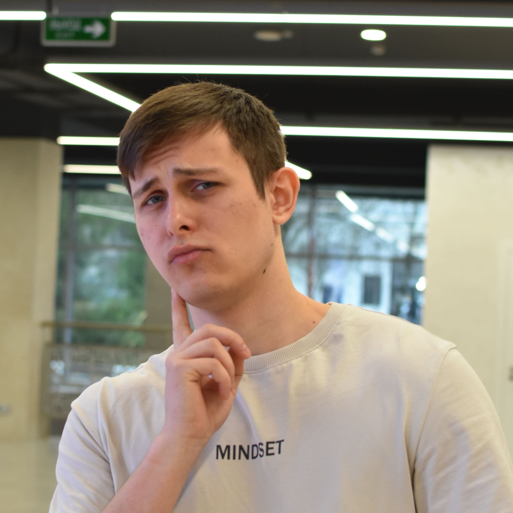

Дмитрий "BattleCrow" Пашков
Unity-разработчик / Гейм-дизайнер
Сделаем отечественный геймдев снова великим!
О себе
В своей работе я сочетаю креативный подход с техническим мастерством, что позволяет создавать не только оригинальные игровые концепции, но и выверенные, отточенные игровые механики.
- Разработка концепции. Создаю уникальные миры, сюжетные линии и геймплейные особенности, способные вдохновлять и удивлять игрока.
- Геймдизайн. Прорабатываю все аспекты игрового процесса – от конкретных механик до балансировки их взаимодействия, позволяющие обеспечить глубокую вовлечённость игрока в проект.
- UX дизайн. Проектирую удобные и интуитивно понятные интерфейсы, создающие качественный пользовательский опыт.
- Прототипирование. Умею писать чистый, структурированный код на C# для Unity для реализации комплексных систем, позволяющих оценить качество разработанной концепции.
- Тестирование. Умею быстро и точечно отлаживать требуемые игровые подсистемы и приводить их к изначально спроектированному состоянию.
Также понемногу веду свой личный Telegram-канал.
Hard Skills
- Unity 6 + C#: прототипирование
- NewtonJSON: работа с json-конфигами
- Git + GitHub: контроль версий
- ООП + SOLID: принципы хорошего кода
- Google Docs: документирование
- Системный дизайн и балансировка
- Английский - B1
Soft Skills
- Коммуникабельность и стрессоустойчивость
- Креативность и инициативность
- Работа в команде
- Критика и выдача фидбека
- Гибкость в поиске решений
- Обширная насмотренность и наигранность
Опыт работы
Проектная работа
2020 – настоящее времяПроектирование, разработка и публикация собственных игровых проектов. Работа в команде в рамках конкурсов и гейм-джемов
Образование
Бакалавриат "Разработка и дизайн компьютерных игр и мультимедийных приложений"
2022 – 2026МИРЭА - Российский технологический университет
Достижения
- Номинация "Лучшее соответствие теме" в рамках гейм-джема от "Начни игру" с проектом "Угроза"
- Третье место в рамках партнёрского кейса конкурса от "Начни игру" в треке Unity-разработчик
Мои проекты
Продолжение следует...